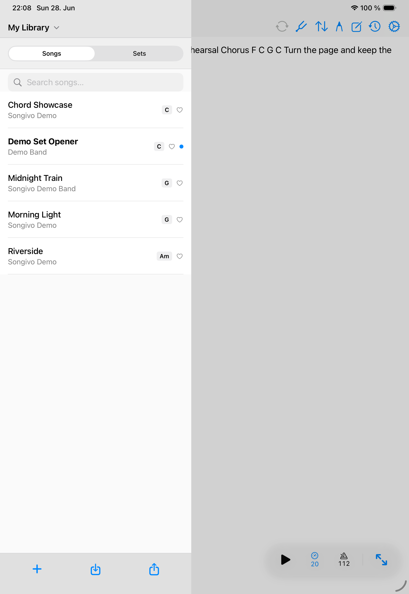

Library
Song Library
The library is where Songivo keeps your songs searchable, filtered, and ready for setlists.

Find songs quickly
- Search by title, artist, and available song metadata.
- Filter by artist, key, tags, favorites, or the currently selected band context.
- Use song numbers when your paper or band workflow depends on numbered charts.
Manage song records
- Open the song from the list.
- Edit title, artist, key, BPM, duration, tags, links, and optional fields.
- Duplicate songs when you need a separate arrangement.
- Delete songs only when they are no longer needed in the selected library.
Copy between libraries
Copy songs between My Library and band libraries when you intentionally want a separate copy. Songivo keeps personal and band libraries independent, so copying is explicit.
If Songivo finds a duplicate title while copying, review the prompt before creating a copy or skipping the item.